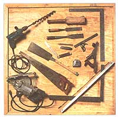

Here, Mike puts the finishing touches on a timber, applying the skills he picked up in Steve Chapell's course...Cutting and milling the pine and spruce timbers (logs that are often considered waste wood) ourselves was a fantastic way to save money...Our radiant heat system uses hot water to heat these tubes enclosed with in the concrete floor.